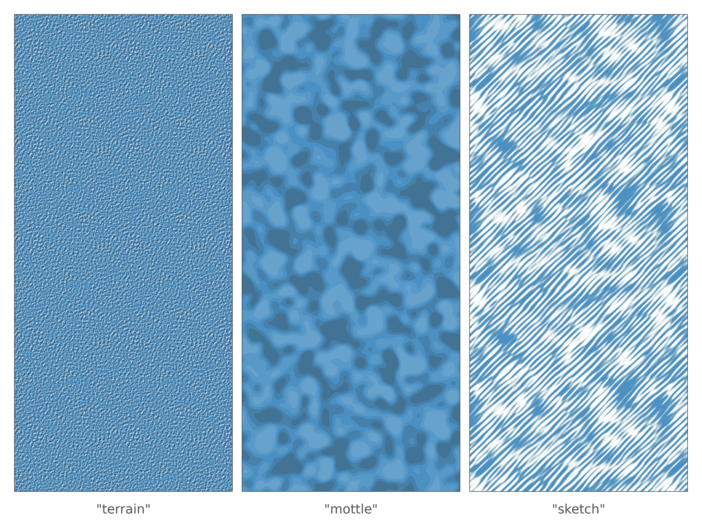
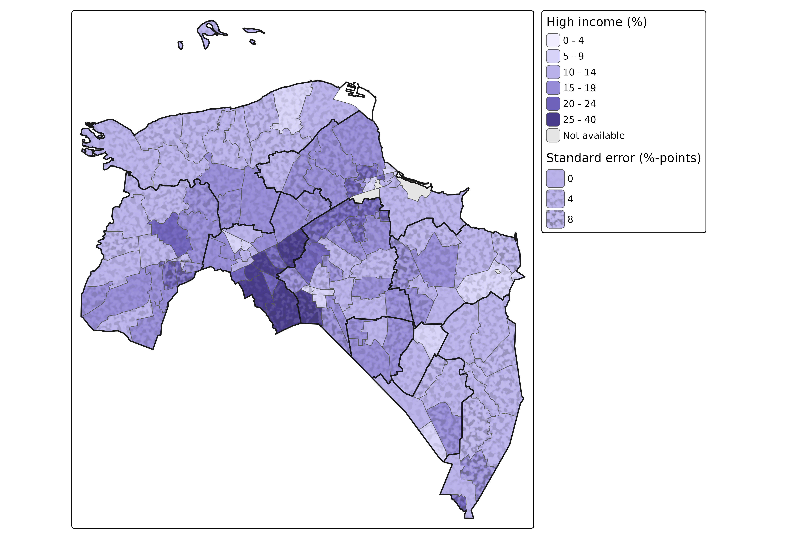
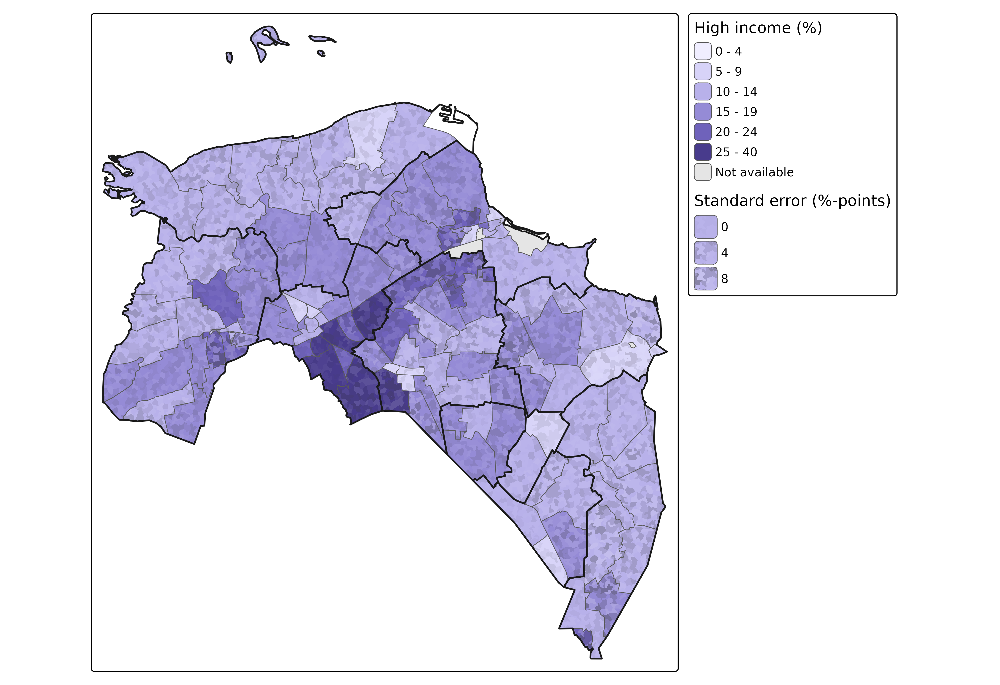
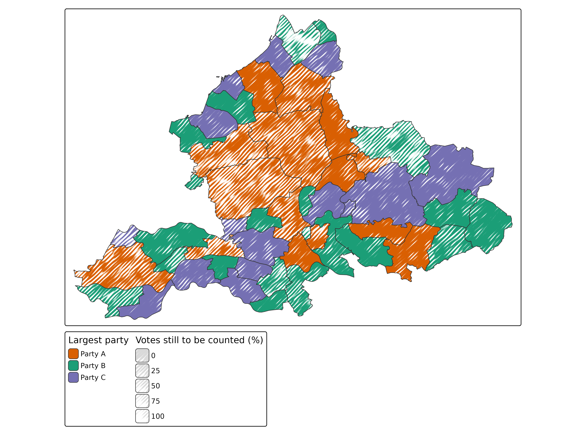
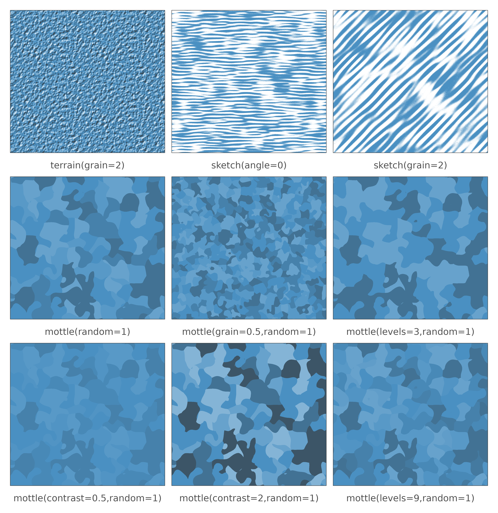

Motifs and textures
The fill patterns of tmap, such as hatching, dots, and bricks, are motifs: regular arrangements of lines or symbols, drawn in the pattern color on top of the fill color. Each motif is clearly recognizable, which makes motifs well suited for categorical variables. However, they are not neutral to the fill color: the eye averages the lines with the color underneath, so a hatched area looks darker (or, with white lines, lighter) than it is.
Three pattern types are different: "terrain",
"mottle", and "sketch". They are
textures: irregular, random surfaces without a
recognizable motif. They are designed to leave the fill color readable,
so that they can be used for a second, ordered variable on top
of a color, in particular the uncertainty of the values
shown by the color. For these textures, the map variable
pattern_density is the strength of the texture, from 0 (no
texture) to 1:
tmap_show_values("pattern", values = c("terrain", "mottle", "sketch"), fill = "#4A90C2")
Each texture gives uncertainty a different meaning:
| Texture | Looks like | Suggests |
|---|---|---|
"terrain" |
random relief, lit from the northwest | the surface is rough: uncertain heights (e.g. in 3D maps) |
"mottle" |
a poorly painted surface: patches of slightly darker and brighter shades | the color is not exactly known |
"sketch" |
a sketchy pencil drawing: the color only in pencil strokes, with paper in between | the map is a draft: the color is a rough indication |
The highlights and shadows of "terrain" and
"mottle" cancel out roughly, so the average color of an
area hardly changes, also at full strength. "sketch" does
change the average color, since paper is drawn in between the pencil
strokes: the stronger the texture, the lighter the area looks. So
"sketch" works best when lighter colors do not mean lower
values, e.g. with a categorical or a diverging palette.
Example: uncertain estimates
In the fill patterns article, unreliable estimates are hatched. Since hatching changes the perceived color, only two classes are used there: reliable and less reliable. With a texture, the uncertainty can be shown as a continuous variable instead.
In this example, the share of high incomes is shown for the districts of the province of Groningen. Suppose these shares are estimated from a sample survey of 5% of the inhabitants (the data are not, so the standard errors below are only an illustration). The standard error of an estimated share from a sample of persons is , so the smaller the district, the larger the uncertainty:
gron = NLD_dist[NLD_dist$province == "Groningen" & NLD_dist$population > 0, ]
p = gron$income_high / 100
gron$se = 100 * sqrt(p * (1 - p) / (0.05 * gron$population))
summary(gron$se)
#> Min. 1st Qu. Median Mean 3rd Qu. Max. NAs
#> 0.9027 1.9133 2.9375 3.5323 4.1410 15.4534 4The standard error is mapped to pattern_density. With
tm_scale_continuous(), the values are scaled linearly from
0 to 1 (by values.range), where the limits set
which standard error corresponds to no texture and which to full
strength. The borders of the municipalities are drawn on top, so that
the districts can be related to them:
gron_muni = NLD_muni[NLD_muni$province == "Groningen", ]
districts = function(pattern) {
tm_shape(gron) +
tm_polygons(fill = "income_high",
fill.scale = tm_scale_intervals(breaks = c(0, 5, 10, 15, 20, 25, 40),
values = "-hcl.purples3",
value.na = "grey90", label.na = "Not available"),
fill.legend = tm_legend("High income (%)"),
pattern = pattern,
pattern_density = "se",
pattern_density.scale = tm_scale_continuous(limits = c(0, 8),
values.range = c(0, 1),
ticks = c(0, 4, 8),
outliers.trunc = c(TRUE, TRUE)),
pattern_density.legend = tm_legend("Standard error (%-points)"),
col = "grey35", lwd = 0.6) +
tm_shape(gron_muni) +
tm_borders(col = "grey10", lwd = 1.6)
}
districts(tm_patterns("mottle", grain = 0.25))
The large districts look evenly painted, and the small ones blotchy.
Their colors can still be compared, also between districts with a
different uncertainty. The patches should be clearly smaller than the
areas (here grain = 0.25): otherwise, a small area may be
covered by one or two patches, which then look like a different
color.
By default, the shades of "mottle" follow smooth noise:
a patch only borders on patches of the next darker or brighter shade.
This may look like a surface, such as a density or an elevation, rather
than paint. With random = 1, each patch gets a random
shade, so that any shades can be neighbors:
districts(tm_patterns("mottle", grain = 0.25, random = 1))
Example: preliminary election results
"sketch" suits maps of which the colors are not final
yet. In this toy example, three parties, A, B, and C, take part in an
election, and the map shows the party with the most votes per
municipality, on election night. In some municipalities, not all votes
have been counted yet. The share of the votes that is still to be
counted is mapped to pattern_density: the more votes still
to be counted, the sketchier the municipality:
gld = NLD_muni[NLD_muni$province == "Gelderland", ]
set.seed(4)
n = nrow(gld)
gld$winner = factor(sample(c("Party A", "Party B", "Party C"), n, replace = TRUE,
prob = c(0.45, 0.35, 0.2)))
gld$to_count = ifelse(runif(n) < 0.6, 0, round(runif(n, 5, 90)))
tm_shape(gld) +
tm_polygons(fill = "winner",
fill.scale = tm_scale_categorical(values = c("#D95F02", "#1B9E77", "#7570B3")),
fill.legend = tm_legend("Largest party"),
pattern = "sketch",
pattern_density = "to_count",
pattern_density.scale = tm_scale_continuous(limits = c(0, 100),
values.range = c(0, 1),
ticks = c(0, 25, 50, 75, 100)),
pattern_density.legend = tm_legend("Votes still to be counted (%)"),
col = "grey20", lwd = 0.8)
The municipalities where counting has finished are fully colored; the
others are only sketched, more roughly the more votes are still to be
counted. The paper of "sketch" is always white, since it is
drawn on top of the fill color; it does not show the background of the
map, such as a basemap.
Parameters
The textures have a few parameters, set with
tm_patterns():
| Parameter | Textures | Description | Default |
|---|---|---|---|
grain |
all | size of the relief, the patches, or the width of the pencil strokes | 1 |
seed |
all | random seed: another seed gives another, equally random texture | 1 |
levels |
"mottle" |
number of shades | 5 |
contrast |
"mottle" |
factor for the differences between the shades | 1 |
random |
"mottle" |
randomness of the shades, from 0 (smooth noise) to 1 (random per patch) | 0 |
angle |
"sketch" |
direction of the pencil strokes (degrees) | 45 |
The values can be specified with tm_patterns(), or as
specification strings, in which the parameters that are left out take
their defaults:
tmap_show_values("pattern", values = c("terrain(grain=2)", "sketch(angle=0)", "sketch(grain=2)",
"mottle(random=1)", "mottle(grain=0.5,random=1)",
"mottle(levels=3,random=1)", "mottle(contrast=0.5,random=1)",
"mottle(contrast=2,random=1)", "mottle(levels=9,random=1)"),
fill = "#4A90C2", ncol = 3)
The grain is relative to the pattern spacing at density 1 (a quarter
of a text line, so 1/20 inch times the scale of
tm_layout()). It is not affected by
pattern_density, which only sets the strength.
The textures are drawn in white (highlights and paper) and in
pattern_col (the shadows of "terrain" and the
darker shades of "mottle"). On a dark fill color, a dark
gray pattern_col is hardly visible; a black
pattern_col gives deeper shadows. pattern_size
is not used by the textures.
3D maps
The texture "terrain" is especially suited for 3D maps,
made with tm_polygons_3d() of the extension package tmap.mapgl,
where the height of the extrusions is a data variable. Rough roofs show
that the height is uncertain:
library(tmap.mapgl)
tmap_mode("maplibre")
tm_shape(gron) +
tm_polygons_3d(height = "income_high",
fill = "income_high",
fill.scale = tm_scale_intervals(values = "-hcl.purples3"),
pattern = "terrain",
pattern_density = "se",
pattern_density.scale = tm_scale_continuous(limits = c(0, 10),
values.range = c(0, 1),
outliers.trunc = c(TRUE, TRUE)))When only the colors are uncertain, but not the heights,
"mottle" or "sketch" is the better choice.
Notes
- The textures are raster images, which are generated at the
resolution of the graphics device (the
dpioftmap_save()). In plot mode, they require a graphics device that supports clipping paths (R >= 4.1), such aspng(type = "cairo"),pdf(), orragg::agg_png(). - The relief and the pencil strokes cannot be finer than the
resolution allows, so a small
grainonly has an effect at a high resolution. - In view mode, the textures are drawn as image tiles, which keep their size on the screen when zooming, like the other patterns.
- The textures repeat in tiles of 1 to 6 inches, depending on the texture and the grain. Larger tiles would make the repetition even less visible, but take longer to generate.